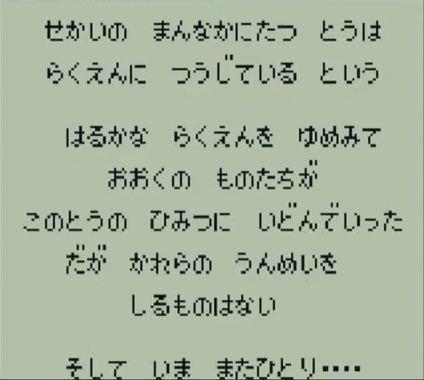

ｓａｇａｍａｘの魔界塔士Sa・Ga
ホーム > ＧＢサガ > 魔界塔士Sa・Ga > 魔界塔士Sa・Gaのすべて > 世界観
はじめに
魔界塔士サガは1989年12月15日に発売されたゲームボーイ(GB)のソフトで、GB初のRPGです。GBでRPGなんて不可能だと言われている中で開発されたソフト（たしかそうだよね？）で、スクウェア初のミリオンヒット作品です。
プロデューサーとか作曲とかの情報も書きたい。
世界観

魔界塔士Sa・Gaには、世界の中心に『塔』があります。この塔は、楽園に通じていると伝えられています。この塔の秘密に挑み、楽園を目指す者を『魔界塔士』と呼んでいます。
魔界塔士Sa・Gaの世界には、地形、気候、風土の異なる複数の世界が存在しており、それらすべてが1つの塔に束ねられています。塔の内部は数々のドアがあり、そのドアを通じて各世界に行き来できるようになっています。
さらに、塔の中では時間は一定に流れていない為、時代の違う世界が多元軸に構成されています。これはゲーム中の以下のセリフでも示唆されています。
実際、このゲームのプロデューサーである河津さんも以下のように言っており、魔界塔士サガは『多元世界を表現したゲーム』だということがわかります。
参考多元世界を目に見える形で表現したかったんですね。世界を繋ぐものが塔だったり柱だったりしたのです。 https://t.co/1ddM8Lif3f
— 河津秋敏 (@SaGa30kawazu) December 12, 2020
河津さんのコメント
そういう話をされると、そういうクレームが来ちゃうからやめてー！ というのはありませんね。皆さん寛容です。真実の神はその程度のことで傷ついたり、失われたりすることは無いからだと思います。 https://t.co/unKXVGzyFp
— 河津秋敏 (@SaGa30kawazu) December 12, 2020
ねずみおとこ が好きだったんですが、ＤＳ版ではねずみおやじに変えられてしまいました。でも、ねずみおやじも何気に好きです。 https://t.co/ZeKwUsLYL2
— 河津秋敏 (@SaGa30kawazu) December 12, 2020
どこまでも登っていくだけでストーリーが進んでいくという単純な構造が実現できるからです。最初はどこまで下りていって最後は魔王と戦うパートとセットで考えていたのですが、塔に登る方だけが残りました。 https://t.co/pRZRqTmDqk
— 河津秋敏 (@SaGa30kawazu) December 12, 2020
ストーリー的に狙った行動です。 https://t.co/BVG4sRsOVQ
— 河津秋敏 (@SaGa30kawazu) December 12, 2020
この辺はアイデア出しの段階で、みんなでいろいろ意見をだして構成を決めましたね。 https://t.co/aKAquLqRIM
— 河津秋敏 (@SaGa30kawazu) December 12, 2020
ワンダースワン版は今回もプロデューサーをやっている三浦君が頑張ってくれたタイトルなので、生放送でその辺も取り上げてもらいましょう。 https://t.co/QCKkD8XUPe
— 河津秋敏 (@SaGa30kawazu) December 12, 2020
関連があったら自分スゴイやつですけど、残念ながらないと思います。とちぼりさんに聞いておきます。 https://t.co/3MaOKZpFFK
— 河津秋敏 (@SaGa30kawazu) December 12, 2020
自分が三国志が好きだからです。 https://t.co/ozxbJmXk98
— 河津秋敏 (@SaGa30kawazu) December 12, 2020
魔界塔士はそのままリメイクでは短すぎるんで、内容をかなり盛らないといけないんですよね。その辺がリメイクが進まない理由です。 https://t.co/mrbXFRotjw
— 河津秋敏 (@SaGa30kawazu) December 12, 2020
ちから、じゃありませんでしたっけ？ https://t.co/LGUjspXwr5
— 河津秋敏 (@SaGa30kawazu) December 12, 2020
そんな都合のいい楽園なんかないんだ、というのがテーマなので、少なくとも扉の向こうが楽園でないのは確かですね。 https://t.co/j2pB2idObU
— 河津秋敏 (@SaGa30kawazu) December 12, 2020
バトルでは、「かみは しんだ」と出ますが、どうなんでしょうね。 https://t.co/Dwh5BqJuui
— 河津秋敏 (@SaGa30kawazu) December 12, 2020
当時の秋葉原には、海賊版か正規版かよく分からないソフトがたくさん流通していて、それらには漢字四文字のものが多かったんです。サ・ガにはそういうアンダーグラウンドなイメージを被せたかったので「魔界塔士」と名付けました。 https://t.co/4c1OtwsHZL
— 河津秋敏 (@SaGa30kawazu) December 12, 2020
このデスマシーンは魔界塔士サガのデスマシーン（2って書いてないので）
SQUARE ENIX様の「ロマンシング サガ リ・ユニバース」にて、
— daible (@sealmancn) May 27, 2022
『 SS デスマシーン 』を描かせて頂きました。
宜しくお願い致します！https://t.co/g6iZ05qP34#仕事絵#ロマサガRS #新ロマサガRS pic.twitter.com/t7FqMRqXLo
海外で昔あったキャンペーン
warmech = デスマシーン
また、デスマシーンは元々FFの敵キャラ。FFⅠだったかな。
Chris Houlihan was named in a secret room in the English version of The Legend of Zelda: A Link to the Past. Can this be the winner @sagamax__ pic.twitter.com/Up61oOwOno
— This is not Taco (@Tacohelpmeowt) May 25, 2022
Thank you for your very interesting information!
— sagamax@サガとレトロゲー (@sagamax__) May 25, 2022
I didn't know the contest was held in the past.
As you say, Chris Houlihan may be the winner of the contest.
However, by this article, the winner of the contest was never revealed by Nintendo.https://t.co/YqAVNHzziX